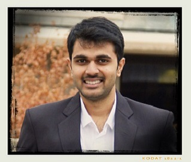

The only way to do great work is to love what you do- Steve Jobs
Hello, I am Venkata Phani Sai Krishna Yerneni pursuing my Master's in Computer Science at Portland State University.
I am very passionate about technology, specially interested in front end development.
I am actively looking for Summer Internships.
About Me
As the quote highlights, I believe in "Doing Great Work" .Well, I am a person with enthusiasm,self-confidence and always have goals set at each stage of my life. I commit myself towards working for my goals while learning through out the course.
Computers have been my passion since childhood and that gave me a great interest and platform towards taking up a career in Computer Science. I finished my Bachelor's Degree in the field of Computer Science. I came out of college as an under-graduate in the year 2014 in India. My strong desire to get more insight into the building concepts of Computer Science led me to pursue Master's in the field of Computer Science. Now, I'm pursuing my MS Degree from the well established Portland State University, Oregon.
Front end development has been and is my passion, each time I visit a new website the look and feel is the first thing that gets my attention. I always think what are the ways to improve it. In this process, I started to gain knowledge required for designing and development. In my academic projects as well as other projects my role was to look after the look and feel of the website.
Develop an excellent visual extravaganza for the user. This motivated me to dedicate myself to front end development. All these reasons, have a huge impact behind my decision to be a front end developer.
Apart from front-end development I also keep myself engaged with development of web applications and also mobile applications.Given an opportunity I would love to showcase my talents and skill set.
I aspire to be a successful Entrepreneur.
My skills
- Web TechnologiesHTML5, JQuery, Java Servlets, Java Server Pages, Javascript, XML, CSS3
- Programming LanguagesJava, C, C++, Python
- Database DesignMySQL, MS SQL Server 2008, PostgreSQL
- Operating SystemsLINUX, Windows, UNIX, MS DOS
- ToolsEclipse, Android Studio, Maven, MS Office, Visual Studio,CoffeeCup
- Web ServersApache, Tomcat
- Version Control SystemsGit
My Professional Experience
Grader, Portland State University [ Oct 2014 – (Present)]
Currently working as the grader for the course Introduction to Programming and Problem-solving(Python Programming)Intern,SoftSol [Sept 2013 – Nov 2013]
Developed and tested the project "SoftSol's System of Payroll(S3OP)" with the help of hibernate framework, Swings and Java, J2EE.Intern,Virtusa [Jan 2014 – April 2014]
This internship was part of the training program for the full-time opportunity, turned out to be a good learning phase both about the work and also the work environment.Intern,Perfect12 Technologies [ Jun 2014 - Aug 2014]
Designed and developed website for San Diego Telugu Association (SANTA) and also designed a webpage for wedding places in Hyderabad, "Book my Place".
My Projects
IBM TGMC PROJECTS
- Employee Expense Management System(TGMC 2013): This application takes into account the employee incurred charges for the company and is reimbursed upon request to the company.
- Intern,SoftSol: Developed and tested the project "SoftSol's System of Payroll(S3OP)" with the help of hibernate framework, Swings and Java, J2EE.
- Unique Id Management System(TGMC 2012): This web based application, works with a motive to give each and every citizen of a country with a unique number when they reach the age of 18.This Unique ID can be used for Voting, Booking tickets online and various other purposes.
ACADEMIC PROJECTS
- Extracting Information from an Online Newspaper: The project focuses on scraping data from the world wide web by the process of web crawling and save it in the user's own personal space or share it via social media.
MY ACTIVITIES
- Actively participated in the development of an open source,Open MRS(Medical Record System) as a part of Google Summer of Code(GSOC).
- Co-founder of a non-profit organization "Cheyuvatha", an organization that provides education for children with a low financial background.
- A sports lover and an active participant in all the sports tournaments held at College level such as Table Tennis, Badminton, Cricket, BasketBall and Football.
Contact me
Phone number: (424)558-9573
Email me to krishna.phani17@gmail.com
Address
1717 SW Park Avenue
Apt#1307
Portland, OR 97201